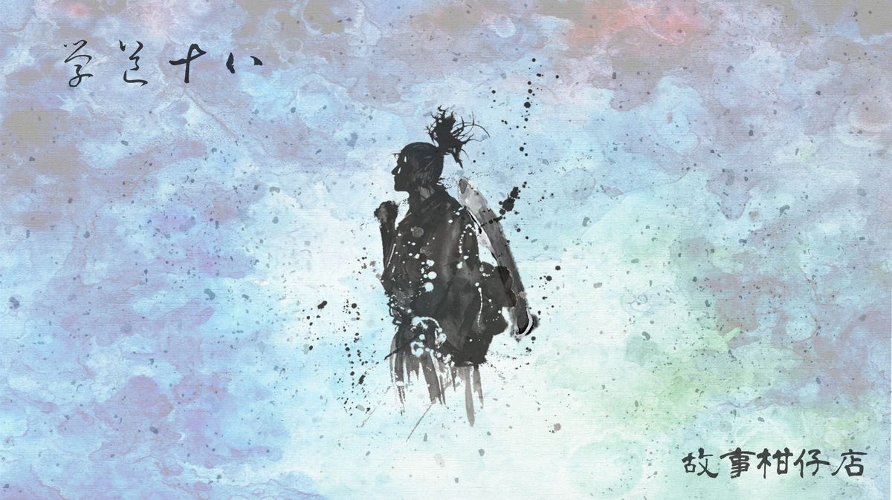

玄墨行者．學道（十八）：上任

「你要去哪？都什麼時候了還亂跑。」
天樞打量背著小包、身穿天璣長袍的拾兒，沒好氣的說。
「呃，我……沒事，我想念師父，想去湖邊坐坐。」面對突如其來一問，伶牙俐齒的拾兒都忍不住結巴。
「私情先放一邊吧，現在有更重要的事得辦。」
天樞將拾兒叫到外廳，所有的師叔師伯都在那兒等候。六個人圍成個半圓，圓心是一張矮桌，要拾兒坐上去。
「你得趕緊成為七者之一才行。」
天樞一臉憂煩，很簡要地說明：原來以往玄墨弟子間若有人將亡，蒙叟都會提前九個月預知大約死期，好讓門派做準備，讓準亡者的傳人三個月通一關，通過三關後，拿到正式成為七者的資格。待一有人死，傳人立刻遞補。玄墨必須隨時維持七者不缺，這是傳統也是規矩。
奇怪的是，這回蒙叟居然沒有預知天璣的死期，自然也沒有提醒大家準備讓拾兒通關。但為了不使天璣的位置空下來，其餘六者決定採用快速通關機制，只求拾兒盡快遞補。
拾兒聽得一臉茫然，沒想過這門的規矩可真多如牛毛，他問道：
「七者暫時少一人，會發生什麼事嗎？」
在場六者面面相覷，沒人答得出來，天璇不耐喝道：「祖師立的，還要理由嗎？」
拾兒識趣閉上嘴，天樞宣布：「第一關，《神異術》驗收。」
圍著坐的六者依序往空中灑香灰，灰中出現各異妖物，或飛或攀，或惡或凶。幸好經過天璣特訓，拾兒對種種妖怪特性了然於心，甚至一見腳爪或體毛，便能一葉知秋，迅速答出妖物名諱及弱點。
第一關毫無阻礙地通過了。接下來第二關，則是驗收機關術。
「你的琴呢？」天樞問。
拾兒從懷中掏出醉妖弦，恢復成正常大小，端正擺在桌上。
「喝！」天樞衣襬凌厲一翻，六根弦竟應聲而斷，就連柄上弦鈕也一一散落，發出迴盪廳堂的音響。
「這、這是幹什麼？」拾兒不解。
「往後收妖，弦斷琴壞可少不了，若不能再最短時間重新佈弦，坐以待斃吧。」
至此，拾兒才恍然大悟。難怪入門後，師父每天規定他得將弦卸下，拿張蠶絲織雲布，一條弦、一條弦細細地擦，再一一鎖回琴身。師父根本在為他預習往後的關卡。
他氣沉凝神，「唰」地抽掉琴弦，掌心壓緊斷口，一搓，斷裂的琴弦居然接了起來。他拾起弦鈕一一安裝原位，琴弦綁上鈕，接著將琴身翻了過來，原來背面有個小卡榫，轉一下，便可一次拉緊六條琴弦。
拾兒忽然狠狠往桌面重擊，琴身不動，倒是琴弦極輕微地顫抖起來。那震動幅度微乎其微，幾乎是靜止的，只有空氣感覺得到動靜。他側耳傾聽，指轉弦鈕，讓第三條弦鬆了一點點。僅是一點點，連拾兒手指都還沒感覺到動作，那根弦已經鬆至份上了。
他擺正弦琴，手指撥剔摘挑，每個音都恰恰站在準尖上。
「拿著你的琴，走吧。」天樞點點頭，權充是認可通過了這一關。
－－－－－
#新連載依舊兩天一篇每晚準時六點半喔
#請人客多多指教
#記得去各大書店買我們的書故事柑仔店哩
